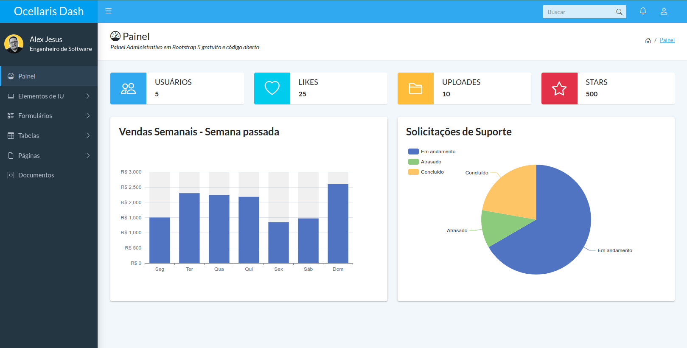

Construído com Bootstrap 5, Sass e PugJS
Gratuito para usar e de código aberto
Bonito e responsivo para dispositivos móveis
Construído com Bootstrap 5, Sass e PugJS
Chart.js integration to display responsive charts
Sete páginas pré-construídas, incluindo login, perfil de usuário e página de fatura para impressão
Tabelas de dados com funções de ordenação, pesquisa e paginação